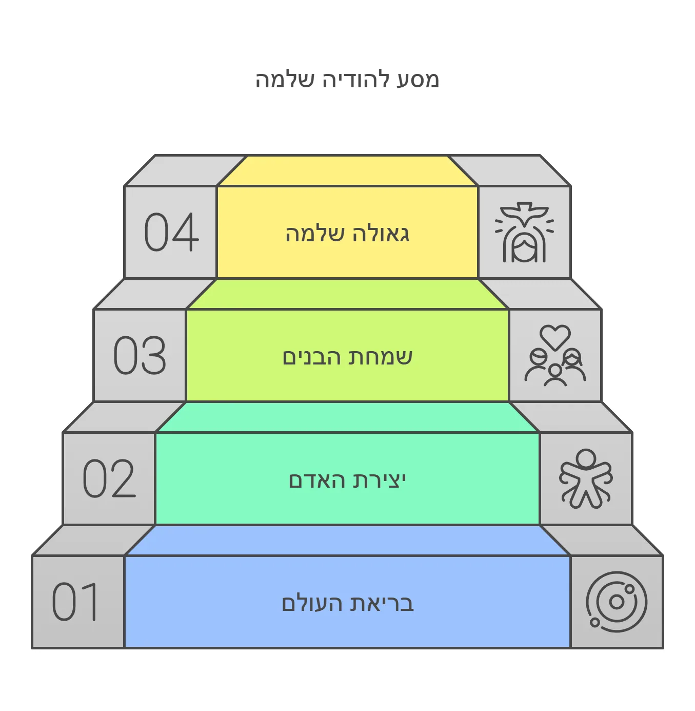

העומק הנפלא בשבע ברכות: מבראשית עד אחרית
יסוד מופלא מתגלה בתקנת חז"ל של שבע ברכות, המאיר לנו את כל מהלך הבריאה באור חדש ועמוק.
הודיה מראשית ועד אחרית
בחכמתם העמוקה, תיקנו חז"ל שדווקא בשעת שמחת חתן וכלה נודה להשי"ת על כל מהלך הבריאה - מראשיתה ועד אחריתה. ונתבונן בעומק הדברים:
המבט הראשון: גילוי חסדי ה'
בשעה שאנו עומדים מול חתן וכלה, מתגלה לעינינו במוחש חסדו המופלא של הקב"ה. כאשר רואים כיצד שני אנשים זרים נעשים לבשר אחד, מתעורר הלב להכיר בגודל החסד האלוקי. ומתוך התעוררות זו, אנו מתחילים לראות את חסדי ה' בכל הבריאה כולה - מראשיתה ועד אחריתה.
המבט העמוק: חיבור הדורות
אך יש כאן עומק נוסף: כל חתונה יהודית היא חוליה בשרשרת מופלאה המחברת את אברהם אבינו עם ימות המשיח. כל זוג שמקים בית בישראל ממשיך את אותה שלשלת קדושה שהתחילה במעמד הר סיני וממשיכה עד לגאולה השלמה.
מבראשית עד גאולה
וכך מתפרטות הברכות:
- מתחילים בבריאת העולם
- עוברים דרך יצירת האדם
- מגיעים לשמחת ציון בבניה
- ומסיימים בגאולה השלמה
בכל חתונה מתחדשת כביכול הבריאה כולה, ובכל שמחת חתן וכלה אנו מתקרבים צעד נוסף לגאולה השלמה.
סוד ההודיה השלמה
ואולי זהו סוד עמוק בהודיה: הודיה אמיתית אינה מסתכלת רק על הרגע הנוכחי, אלא רואה את כל התמונה הגדולה - מראשית ועד אחרית. כשאנו מודים על חתן וכלה, אנו מודים על כל מהלך ההיסטוריה האלוקית, שכל חתונה היא חלק ממנה.
הרי לנו שבשבע ברכות טמון לא רק שבח והודיה, אלא מבט עמוק על כל תכלית הבריאה. האין זה מרומם את כל שמחת החתן והכלה למדרגה חדשה לגמרי?